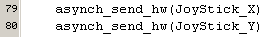
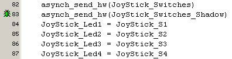

july 2005
RPD JoyStick
This module can interface a standard analog PC JoyStick, but also professional JoySticks (based on full potentiometer ranges).
The JoyStick is connected through the standard PC 15-pole D-connector. Although the 15-pole D-connector can handle 2 joysticks, this rpd-module can handle only 2 potmeters (from the first joystick), bit it can handle upto 4 switches (from both joysticks). The LEDs are not available on a standard PC-joystick but can be added by modifiying the joystick. In any case all the LEDs are also available on the RPD module.
If 2 joysticks are needed you could use 2 rpd-JoyStick-modules. Of course it's also possible to use the switches (if desired with LED feedback) to change the function of the potmeters.
An analog PC JoyStick consists of 2 potmeters, which are not connected as a full potmeter, but are just connected as a variable resistor to +5V. (normally they are used in a 555 timing circuit. The range of the potmeter is effectively 0 .. 100 kOhm.
The opamp with the transistor at its output, act as a current source, thereby converting the potmeter-resistance linear into a voltage (V = I * Potmeter). This current source is not needed for professional potmeters, so that's where the jumper is for. Because the AD-converter needs a low impedance, the second opamp is used as an impedance transformer.

Switch / LED multiplexing
Normally the PIC-pin (used for LED and Switch) is set to output and then the LED will reflect the status of the (inversed) output bit. When reading the switch, the PIC-pin is set temporary to input, so the PIC can read the switch. The 10k resistor ensures that the input is read as high, in case the switch is open. After reading the switch, the pin is set to outpur again.
When the LED is on, the LED will be turned off, during the switch is pressed. Because these switches are pushbuttons, this will hardly be a problem.
JALcc macro call
defining a JoyStick, named "JoyStick" on connector J1

JALcc use
The potmeters are directly available (at low ADC resolution = 8 bits) through pseudo variables "<name>_X" and "<name>_Y", so you can directly use them as normal variables.

On initialisation of the PIC, the potmeters are nulled, therefor it's also possible to read the 2-complement values.
If you want the high resolution results (which are easily available, because the AD-converter is always set to high resolution), you should call the high resolution ADC-routines
The switches can be read through the function "<name>_Switches". After using this function, the total result is also available in the variable "<name>_Switches_Shadow", and the individual bits are also available, under "<name>_S1" ... "<name>_S4". The reading of the switches is done with a build-in debouncing algoritm: only after 2 consecutive readings are equal, the value is returned as a result. If you cann't use or don't want to use the debouncing, you can also use the raw values through the variables "<name>_S1_raw" ... "<name>_S4_raw".
In line 82, the function (pseudo-variable) to read the switches is called and used directly into the asynch_send_hw procedure.
In line 83, the shadow register (filled by line 82) is used, The low nibble contains the debounced results and the high nibble contains the raw results. (Don't change the value of the shadow register, because it's used by the debouncing algoritm.
In line 84 ... 87 the individual bits *filled by line 82) are used.

and the raw values
The LEDs can be controlled individual by the variables "<name>_LED1" ... "<name>_LED4", as shown in the example above, line 84 ... 87.
JALcc macro expansion
PC JoyStick
Here you can find a lot of information about analog PC joystiscks: PC joystick interface
Professional JoyStick